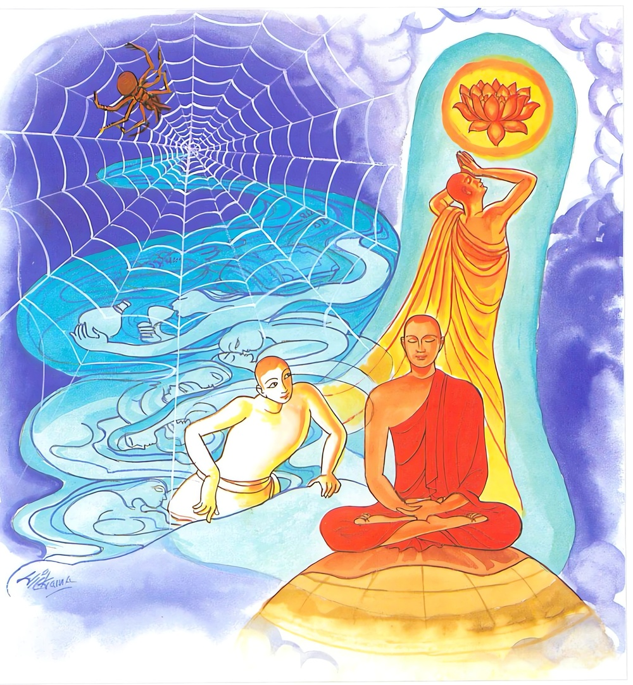

24-5 ඛේමා තෙරණියගේ කථා පුවත
මෙම කතාව සද්ධර්ම සාගරයෙන් ද කියවන්න.
යෙ රාගරත්තානුපතන්ති සොතං
සයං කතං මක්කටකො’ව ජාලං
එතම්පි ඡෙත්වාන වජන්ති ධීරා
අනපෙක්ඛිනො සබ්බදුක්ඛං පහාය.
රාගයෙන් රත් වූ (ද්වේෂයෙන් ද්විෂ්ට වූ මෝහයෙන් මූඪ වූ) යම් සත්ත්ව කෙනෙක් තමන් විසින් කරණ ලද දැල අනුව පවත්නා එහි ම වැද හෝනා මකුළුවා මෙන්, තමන් ම උපදවා ගත් තෘෂ්ණාස්රෝතයෙහි ම වැටී හෙත් ද, ප්රාඥයෝ වනාහි මෙය ද සිඳ පියා විවිධ කාමයෙහි නිරාලය ව සියලු දුක් දුරැ ලා නිවන් පුර යන්නාහ.

"යෙ රාග රත්තා ” යන මේ ධර්ම දේශනය ශාස්තෲන් වහන්සේ රජගහ නුවර වේළුවනාරාමයේ වැඩ සිටියදී ඛේමා නම් බිම්බිසාර රජුගේ අගමෙහෙසිය නිමිති කරගෙන දේශනා කළහ.
ඇය වනාහි පදුමුත්තර බුද්ධපාද මූලයේ පතන ලද ප්රාර්ථනය නිසා ඉතාම අභිරූපී ප්රාසාදික ස්ත්රියක් වුවාය. බුදුහු රූපයේ දොස් කියතියි අසා බුදුන් හමුවට යාමට නොකැමති වුවාය. රජු ඇගේ රූප මදභාවය දැනගෙන වේවනාරාමය වර්ණනා කරන ගීත රචනා කර කාව්යකරුවන් ආදීන්ට දෙවීය. ඔවුන් ගේ ඒ ගී ගායනා අසා තමන් නොදුටුවිරූ නොඇසු විරූ වේළුවනය පිළිබඳව ආශාවක් ඇයට ඇතිවිය. ඇය කවර උයනක් පිළිබඳව ගයන්නේදැයි අසා දේවිය ඔබගේ වේළුවන උයන පිළිබඳ වයයි පැවසුවිට උයනට යනු කැමැති විය. බුදුරජාණන් වහන්සේ ඇගේ පැමිණිම දැන ගෙන පිරිස මැද සිට ධර්මය දේශනා කරමින්ම - තල් වටක් ගෙන තමා පසුපස සිට පවන් සලන ඉතා අභිරූපී කාන්තාවක් මැවීය. ඛේමා දේවිය ඇතුළුවන විටම එම ස්ත්රී රූපය දැක සිතුවාය. තථාගතයන් වහන්සේ රුපයේ දොස් කියතියි පවසති මේ ස්ත්රිය උන්වහන්සේ අසල සිට පවන් සලයි. මම ඇගේ රුවෙන් අඩකටවත් නොගැළපේ. මෙතරම් අභිරූපී කාන්තාවක් මම කිසිදා දැක නැත. බුදුරජාණන් වහන්සේට අභූත අසත්ය චෝදනා නගතියි සිතමි. මෙසේ සිතා බුදුන්ගේ කටහඩවත් නො අසා එම ස්ත්රිය දෙසම බලමින්ම සිටියාය. බුදුහු ඇගේ සිත්හසර බලා ඛේමාවනි ! ඔබ රූපයේ සාරයක් ඇතැයි සිතන්නීය. බලන්න ඇගේ නිසරුබව කියා මේ ගාථාව දෙසුහ.
ඛේමාවනි! ඉතා අපිරිසිදු වූ ලෙඩ බහුල වූ. කුණු සැරව වැගිරෙන්නා වූ මේ සිරුර බලන්න. බාලයෝ මේ නිසරු වූ සිරුර ප්රාර්ථනා කරති.
ඇය ගාථාව කෙළවර සෝවාන් ඵලයෙහි පිහිටියායි අනතුරුව තථාගතයන් වහන්සේ ඛේමාවනි ! මේ සත්ත්වයෝ රාගයෙන් රත්වූවෝ ද්වේශයෙන් දුෂිත වූවෝ මෝහයෙන් මුලාවුවෝ තමන්ගේ තෘෂ්ණා ගඟ ඉක්මවීමට නොහැකි වෙති. එහිම ඇලෙති පවසා මේ ගාථාව දේශනා කළහ.
මකුළුවකු තමන් කළ දැල තුළම පටලැවී
සිටින මෙන් රාගයෙන් රන්ව දන මේ ලොවේ
දුක් විඳින අතර තුර නුවණ ඇති තැනැත්තේ
සියලු දුක් බිදැර දා නිවන්සුර සැපත් වේ.
එහි මක්කටකොව ජාලන්ති යම් සේ මකුළුවෙක් නුල් දැල එලා ඒ දැල මැද නාභි මණ්ඩලයේ සිටින්නේ, දැලට වැටෙන්නා වූ මැස්සෙක් හෝ මඳුරුවෙක් හෝ වේගයෙන් අවුත් දැලේ රැඳුනු විට මකුළුවා වේගයෙන් අවුත් ඌ විද ඒ සතාගේ රසඕව බී නැවත ගොස් එතැනම නොවී. මෙසේම රාගයෙන් රත් වූ ද්වේෂයෙන් දුෂිතවූ. මෝහයෙන් මුළා වූ, සයංකතං තෘෂ්ණාව සොතං අනුපතං ඔහුට එය සමනය කරන්නට නොහැකිවේ. මෙසේ මුදාගන්නට නොහැකිවේ. එතමපි ඡෙත්වාන වදනතධීරා පණ්ඩිතයෝ, එතං මෙසේ දැඩිව ගත් බන්ධන සිඳ, අනපෙකඛිතො ආශාවන්ගෙන් ඈත් වී. අරහත් මගින් සියලු දුක් අවසන් කොට දුරුර නිවනට පැමිණෙත් යන අර්ථයි.
මේ දෙසුම අවසන බේමා බිසව රහත්බවට පත්වුනි. මහජනයාටද දේශනය සාර්ථක විය. බුදුරදුන්ද මහරජුට මෙසේ පැවසුහ. ඛේමා පැවිදි වීමට හෝ පිරිනිවන් පෑම සුදුසු වේ. ඇය පැවිදිවි අග්රශ්රාවිකා වුවාය.